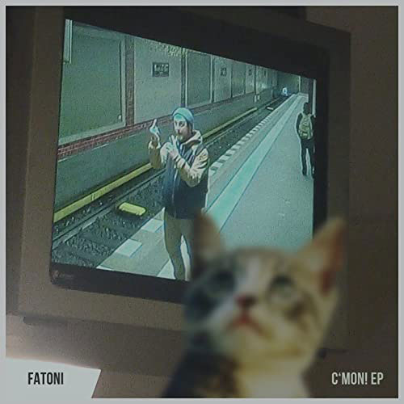
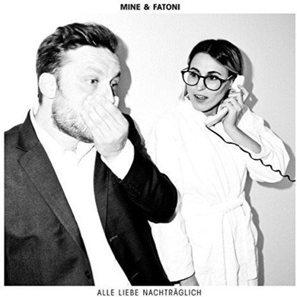
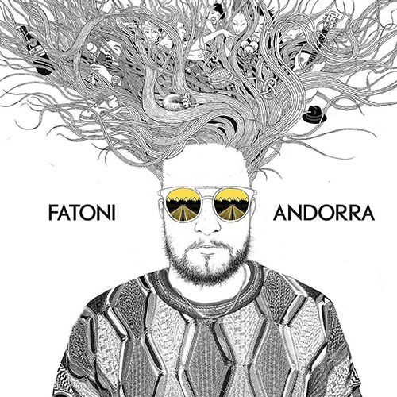

...wuchs in München auf. Er absolvierte seinen Zivildienst in einem Kindergarten und wurde anschließend zum Kinderpfleger ausgebildet. In seiner Kindheit war er Fan der Beatles.
In München gründete er im Jahr 2000 gemeinsam mit dem Rapper Keno und dem Produzenten Bustla die Band Creme Fresh. Bis zur Auflösung der Gruppe 2012 veröffentlichte die Band vier Alben und eine EP. Zeitweise war Fatoni im U20-Bereich der deutschsprachigen Poetry-Slam-Szene aktiv, vorrangig in Münchener Raum. Bis 2010 war Fatoni gemeinsam mit seinen Bandmitgliedern auch Teil der Brassband Moop Mama, schlug dann aber Solopfade ein.
2011 erschien mit Solange früher alles besser war Fatonis erstes Soloalbum, 2013 veröffentlichte er das Kollaboalbum Nocebo zusammen mit Edgar Wasser. Im Jahr darauf folgte seine EP Die Zeit heilt alle Hypes. 2015 veröffentlichte Fatoni die C’mon! EP, zu der u. a. Edgar Wasser, Dexter und Occupanther Beats beisteuerten.
Noch im selben Jahr veröffentlichte Fatoni gemeinsam mit Dexter sein Album Yo, Picasso. Die Platte stieg bei Erscheinen auf Platz 23 in die deutschen Albumcharts ein. Als Gast ist Philipp Grütering aka Kryptik Joe von Deichkind zu hören. Im März 2017 folgte Fatonis Mixtape Im Modus, auf dem neben alten Weggefährten wie Edgar Wasser, Dexter und Juse Ju auch Maeckes, Retrogott und die Elektropop-Band Grossstadtgeflüster zu hören sind.
Im Oktober 2017 erschien das Album Alle Liebe nachträglich, das Fatoni gemeinsam mit der Sängerin Mine aufnahm. Die beiden hatten zuvor schon für Mines Song Ziehst du mit kollaboriert. Die Platte wurde vom Preis für Popkultur 2018 in den Kategorien Lieblingsalbum und Spannendste Idee/Kampagne nominiert. 2019 folgte mit Andorra Fatonis nächstes Soloalbum, das auf Platz 9 der deutschen Albencharts einstieg.
Neben seiner Rapkarriere ist Schneider als Schauspieler aktiv. Er studierte Schauspiel an der Otto-Falckenberg-Schule und war in diversen Inszenierungen in München, auch an den Münchner Kammerspielen zu sehen. Nach einem Gastengagement am Stadttheater Klagenfurt spielte er von 2013 bis 2015 im Ensemble des Theaters Augsburg. Seit 2015 moderiert er außerdem jeden zweiten Freitag im Monat die Sendung Die Fatoni Show auf Radio Puls.
Auf Touren hat er zum einen seine Drummerin und seinen DJ dabei:
- Linda-Philomène Tsoungui
- V.Raeter
| Albuncover | Titel | Erscheinungsjahr |
|---|---|---|
| Prosecco Piff | 2007 | |
 |
Solange früher alles besser war | 2011 |
 |
Nobeco | 2013 |
 |
Die Zeit heilt alle Hypes | 2014 |
|  | C’MON! EP | 2015 |
 |
Yo, Picasso | 2015 |
 |
Im Modus | 2017 |
|  | Alle Liebe nachträglich | 2017 |
|  | Andorra | 2019 |